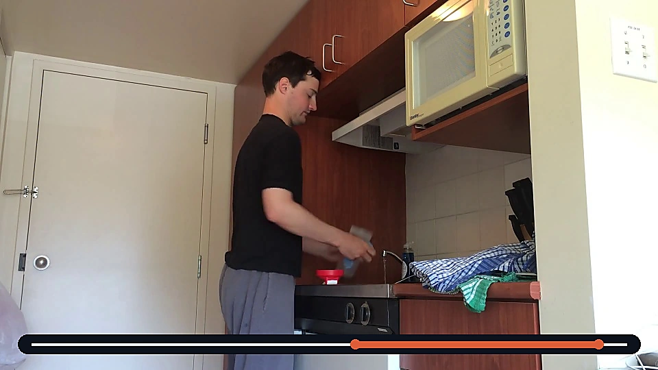
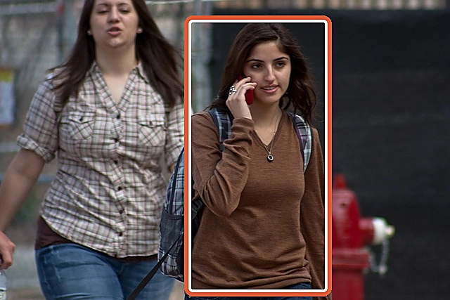
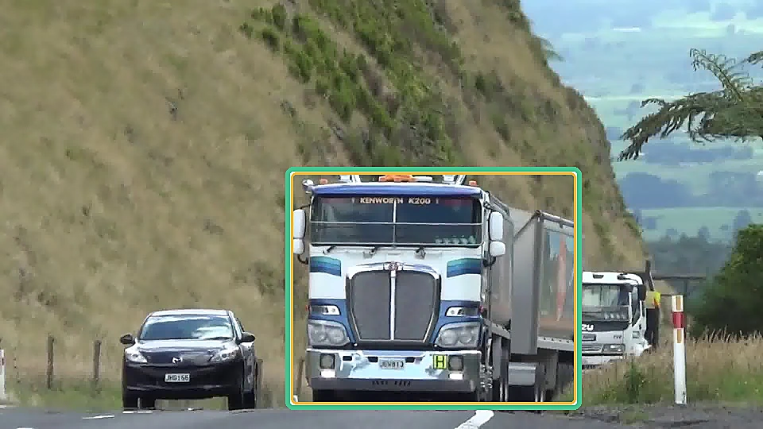
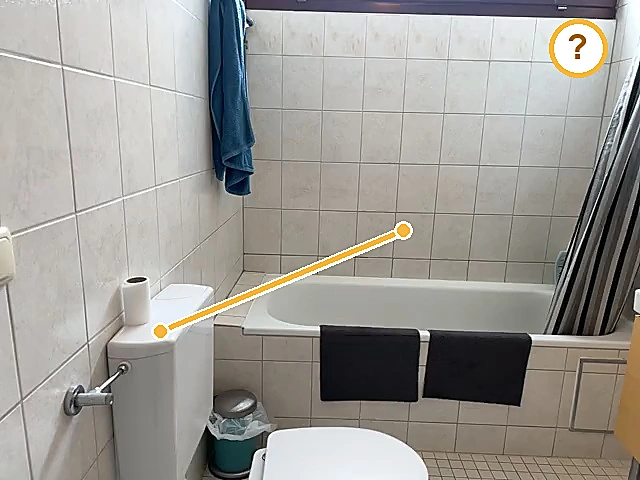
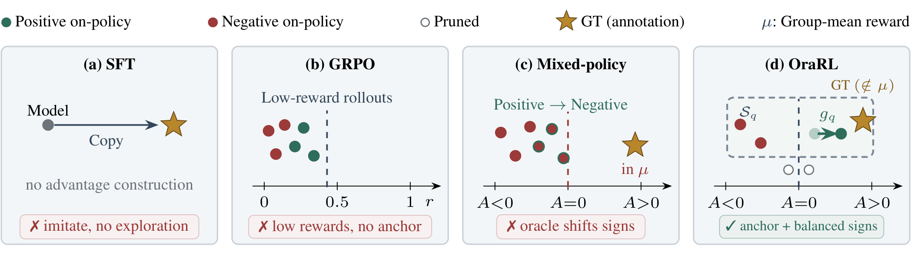
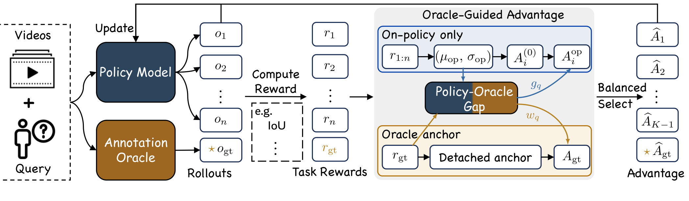
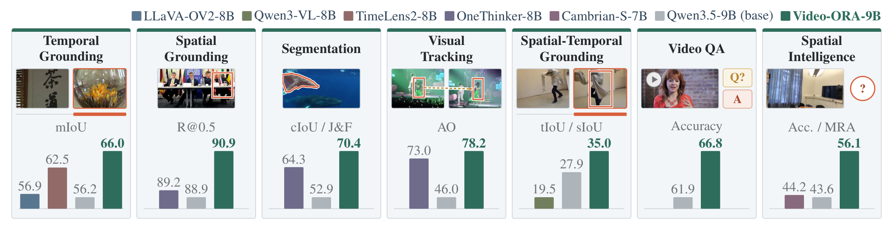
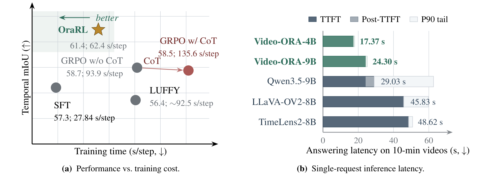

Reliable positive anchor
Every training group receives one precise, task-valid positive rollout.
Efficient and scalable reinforcement learning for unified video MLLMs. OraRL turns every annotation into a reliable positive rollout while preserving on-policy exploration.

Temporal grounding
Spatial grounding
Visual tracking
Spatial intelligenceA visual overview of the motivation, method, results, and efficiency.
Existing video RL uses annotations only to score sampled responses. OraRL also serializes each annotation as an oracle rollout—a direct, task-independent positive target.

Every training group receives one precise, task-valid positive rollout.
On-policy rewards alone define the baseline, preventing advantage inversion.
The annotation supplements sampled behavior rather than replacing it.
The policy group sets a clean reference. The oracle–policy gap then strengthens promising rollouts and supplies a separate detached anchor.

Serialize intervals, boxes, masks, trajectories, or answers into the model’s native response format.
Normalize only on-policy rewards so rollouts keep their correct policy-relative signs.
Use the oracle–policy gap for a bounded directional gain and a detached oracle advantage.
Retain strong positive and negative signals with the oracle, then restore update moments.
Video-ORA-9B improves over its backbone and every displayed baseline across unified video perception—without chain-of-thought decoding.

mIoU, up from the prior best of 62.5.
Average overlap on GOT-10k.
Aggregate cIoU / J&F family score.
Best reported overall average.
Selective back-propagation shortens updates, while answer-only generation removes costly reasoning traces at inference time.

Higher temporal mIoU with substantially less update time than GRPO.
Answer-only decoding on ten-minute videos, without generated reasoning traces.
The public arXiv identifier will be added after announcement.
@article{li2026orarl,
title = {Annotations as Rollouts: Efficient and Scalable
Reinforcement Learning for Video MLLMs},
author = {Li, Yunheng and Mu, Guohong and Li, Hao and
Qian, Shengsheng and Zhang, Dingwen and Hou, Qibin
and Cheng, Ming-Ming},
journal = {arXiv preprint},
year = {2026}
}